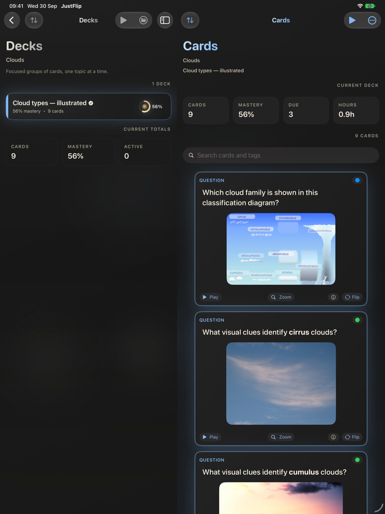
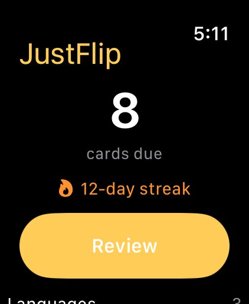
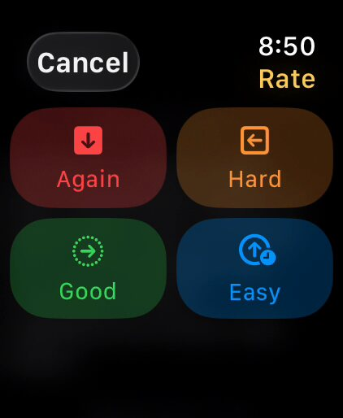
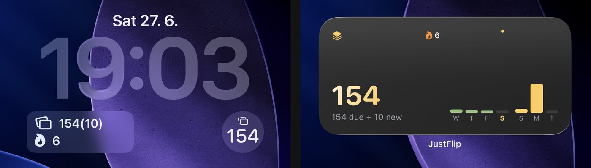

8.1 iPad
Auf dem iPad nutzt JustFlip! ein zweispaltiges Layout, wie die App „Einstellungen“. Die Seitenleiste links enthält deine Interessen und, sobald du eines auswählst, dessen Stapel. Die Detailspalte rechts zeigt die Karten des ausgewählten Stapels. Links stöberst du, rechts lernst du, und dabei verlierst du nie den Faden.

Das Layout richtet sich danach, wie du das iPad hältst:
- Mit reichlich Platz (im Querformat oder auf einem großen iPad im Hochformat) stehen beide Spalten nebeneinander.
- Wenn es eng wird (auf einem kleineren iPad im Hochformat oder mit JustFlip! neben einer anderen App) bekommen die Karten den ganzen Bildschirm. Die Seitenleiste schiebt sich herein, wenn du oben in der Ecke auf die Seitenleistentaste tippst oder vom linken Rand hereinwischst.
JustFlip! funktioniert auch in Split View und Slide Over neben einer anderen App, und die Spalten passen sich dem verfügbaren Platz an. Die App läuft in einem einzigen Fenster, du kannst also keine zwei JustFlip!-Fenster nebeneinander öffnen.
8.1.1 Drag & Drop
Drag & Drop funktioniert auf zwei Arten:
- Eine Datei durch Ablegen importieren. Zieh eine
.flashcards- oder.flashcards.zip-Datei, eine CSV-Tabelle oder ein Anki-Paket.apkgaus der App „Dateien“ (oder aus einer anderen App in Split View) auf JustFlip!. Du kannst sie irgendwo im Fenster ablegen, und der Import startet so, als hättest du die Datei geöffnet. Was jedes Format mitbringt, erklärt Kapitel 5. - Deine Bibliothek neu anordnen. Interessen, Stapel und Karten lassen sich alle durch Ziehen umstellen. Für Interessen wählst du Neu anordnen im Menü oben auf dem Bildschirm „Interessen“. Für Stapel und Karten wählst du Bearbeiten im Menü der Liste. Dann ziehst du die Zeilen an ihren Griffen und tippst auf Fertig, wenn du fertig bist.
Mit Trackpad oder Maus heben sich die Bewertungstasten an, wenn du den Zeiger darüber bewegst. Mit einer Hardwaretastatur funktionieren die Wiederholungskürzel aus der Tastaturübersicht auf dem iPad genau wie auf dem Mac.
8.2 Mac
Auf dem Mac nutzt JustFlip! die volle Breite eines Desktop-Fensters mit drei Spalten: Interessen, Stapel und Karten. Machst du das Fenster schmaler, verschwindet die Spalte „Interessen“ hinter der Seitenleistentaste, damit Stapel und Karten genug Platz behalten. In einem sehr schmalen Fenster bleiben nur die Karten sichtbar. Ziehst du das Fenster wieder breiter, kommen alle drei Spalten zurück.
8.2.1 Die Menüleiste
JustFlip! fügt oben im Menü Ablage eigene Befehle hinzu:
| Befehl | Kürzel | Was er tut |
|---|---|---|
| Import Cards… | ⇧⌘I | Öffnet eine Dateiauswahl für jede importierbare Datei |
| Import Interest Archive… | — | Dieselbe Dateiauswahl, unter dem Namen, nach dem du vielleicht suchst |
| Export Interest… | ⇧⌘E | Exportiert das ausgewählte Interesse als Archiv |
| Export Statistics… | — | Exportiert die Statistiken des ausgewählten Interesses |
Beide Importbefehle öffnen dieselbe Auswahl. JustFlip! erkennt das Format an der Datei selbst, es ist also egal, welchen du wählst. Der Rest der Menüleiste (Über, Ausblenden, Beenden, Bearbeiten, Fenster, Hilfe) ist die übliche Mac-Menüleiste.
Export Interest… und Export Statistics… wirken auf das Interesse, das in der Seitenleiste ausgewählt ist. Ist kein Interesse ausgewählt, passiert gar nichts: kein Fehler, kein Dialog. Klicke zuerst auf ein Interesse und wähle dann den Befehl.
Vorerst sind die vier oben genannten Befehle im Menü „Ablage“ auf Englisch, egal, auf welche Sprache die App eingestellt ist. Alles andere in JustFlip! folgt deiner Sprache.
Ein paar Dinge funktionieren anders als in anderen Mac-Apps:
- Es gibt kein ⌘, für die Einstellungen. Öffne die Einstellungen über die Zahnradtaste oben in der Spalte „Interessen“ und wähle dann Einstellungen.
- Es gibt kein ⌘F. Um alle deine Karten zu durchsuchen, nutze die Lupentaste oben in der Spalte „Interessen“.
- Keine Taste startet eine Wiederholung. Klicke zum Beginnen auf eine Wiederholungstaste und erledige den Rest mit der Tastatur.
Drag & Drop aus dem Finder funktioniert wie auf dem iPad: Leg eine Stapeldatei irgendwo im Fenster ab, um sie zu importieren.
8.3 Tastenkürzel
Die Wiederholungskürzel funktionieren auf dem Mac und auf einem iPad mit Hardwaretastatur. Sie sind für eine Hand gemacht: Umdrehen mit der Leertaste, Bewerten mit den Zifferntasten, und nie zum Zeiger greifen.
| Taste | Aktion | Wo sie funktioniert |
|---|---|---|
| Leertaste | Karte umdrehen | Während einer Wiederholung |
| Leertaste | Verdeckten Bereich aufdecken | Während einer Wiederholung mit Bildabdeckung |
| 1 | Mit Nochmal bewerten | Während einer Wiederholung |
| 2 | Mit Schwer bewerten | Während einer Wiederholung |
| 3 | Mit Gut bewerten | Während einer Wiederholung |
| 4 | Mit Leicht bewerten | Während einer Wiederholung |
| Zeilenschalter | Eingetippte Antwort prüfen | Während einer Wiederholung mit aktiviertem Antworten eintippen |
| ⇧⌘I | Import Cards… | Mac, überall (Menü „Ablage“) |
| ⇧⌘E | Export Interest… | Mac, mit ausgewähltem Interesse (Menü „Ablage“) |
Die Zifferntasten sind einfache Ziffern, nicht ⌘ plus Ziffer. So bleibt das Bewerten bei einem einzigen Tastendruck.
Jeder davon ist Absicht, und jeder sieht wie ein Fehler aus, wenn man ihn nicht kennt:
- Du tippst gerade eine Antwort. Solange das Feld Antwort eingeben aktiv ist, tippen Leertaste und 1–4 stattdessen Zeichen. Sonst würde eine eingetippte „3“ die Karte mit Gut bewerten. Der Zeilenschalter prüft die Antwort trotzdem.
- Du hast „Strengere Bewertung“ eingeschaltet. Ist Einstellungen › Verhalten › Strengere Bewertung aktiv, verschwinden beim Umdrehen der Karte die Tasten Gut und Leicht, und mit ihnen die Tasten 3 und 4. Standardmäßig ist die Option aus.
- Die Antwort unter der Abdeckung ist noch verborgen. Auf einer Karte mit Bildabdeckung funktionieren die Bewertungstasten erst, nachdem du die Antwort mit der Leertaste aufgedeckt hast.
8.4 Apple Watch
Die Watch-App ist ein kleiner, konzentrierter Begleiter. Sie zeigt, wie viele Karten fällig sind, und lässt dich sie direkt am Handgelenk wiederholen. Praktisch in der Warteschlange, beim Spazierengehen oder überall dort, wo du dein iPhone nicht herausholen kannst.

Der Bildschirm „Heute“ auf der Watch zeigt:
- die Zahl der fälligen Karten,
- deine Serie, falls du eine hast,
- die Taste Wiederholen,
- bis zu vier deiner Interessen, jeweils mit der Zahl fälliger Karten.
Beim ersten Öffnen hat die Watch noch nichts anzuzeigen. Sie bittet dich: Öffnen Sie JustFlip auf Ihrem iPhone, um Ihre Karten zu synchronisieren. Öffne die iPhone-App einmal, und die Watch füllt sich.
8.4.1 Wiederholen am Handgelenk
- Tippe auf Wiederholen.
- Lies die Frage. Tippe auf die Karte oder auf Antwort zeigen, um sie umzudrehen.
- Halte die Karte gedrückt, um sie zu bewerten. Die vier Bewertungen erscheinen als Raster, mit denselben Farben und Symbolen wie auf deinem iPhone: Nochmal, Schwer, Gut und Leicht. Wähle eine, und die nächste Karte folgt von selbst.
- Ist die Warteschlange abgearbeitet, sagt die Watch Gut gemacht und zeigt, wie viele Karten du wiederholt hast.
Warum gedrückt halten statt vier Tasten? Der Watch-Bildschirm ist klein. Vier Tasten würden die Antwort, also genau das, was du beurteilst, aus dem Bild drängen. Durch das Gedrückthalten bleibt die ganze Anzeige der Karte vorbehalten. Die erste Karte deiner ersten Sitzung erklärt die Geste einmal, danach bleibt ein kleiner Hinweis Zum Bewerten halten unter der Karte. Du kannst eine Karte auch schon auf der Frageseite bewerten, wenn du sie auf einen Blick weißt.

8.4.2 Was die Watch zeigt
Das iPhone bereitet jede Karte für die Watch vor, damit sie so aussieht wie auf dem Telefon: fett, kursiv und Code, Formeln, Fotos und Diagramme, passend verkleinert für dein Handgelenk.
- Lückentextkarten funktionieren. Die Lücken erscheinen als […] oder als Hinweis, falls du einen angegeben hast. Die Rückseite zeigt den Satz mit ausgefüllten Lücken, dazu eventuelle Notizen von der Antwortseite.
- Markierungen erscheinen als sanfte Farbe hinter dem Stapelnamen oben auf der Karte. Du siehst sie auf der Watch, setzt sie aber auf dem iPhone.
- Code und Tabellen erscheinen in einer schlichten Festbreitenschrift, ohne Syntaxfarben.
8.4.3 Was die Watch dem iPhone überlässt
Manche Karten passen nicht aufs Handgelenk, deshalb schickt JustFlip! sie gar nicht erst an die Watch. Das ist besser, als eine Karte ohne genau den Teil zu zeigen, den sie abfragt. Diese Karten bleiben auf deinem iPhone:
- Karten mit Audio oder einem PDF auf einer der beiden Seiten,
- Fortschritts-Tracker, die du mit einem Schieberegler bewertest, nicht mit vier Tasten,
- Karten mit mehr als 280 Zeichen auf einer der beiden Seiten,
- Karten, deren Foto oder Diagramm zu groß zum Senden oder zu detailreich zum Lesen in Handgelenkgröße ist.
Die Watch trägt außerdem höchstens 60 Karten auf einmal. Bleiben Karten zurück, sagt der Bildschirm „Heute“ das, zum Beispiel „12 Karten brauchen Ihr iPhone“. Lässt sich keine deiner fälligen Karten auf der Watch wiederholen, siehst du Auf dem iPhone wiederholen dort, wo sonst die Taste „Wiederholen“ wäre.
8.4.4 Dein iPhone führt den Plan
Die Watch plant selbst nichts. Dein iPhone ist das einzige Gerät, das entscheidet, wann jede Karte wiederkommt. Die Watch behält eine Kopie der Karten, die dein iPhone zuletzt geschickt hat, und eine Liste der Bewertungen, die du vergeben hast. Diese Bewertungen schickt sie an dein iPhone zurück, das den Plan aktualisiert. Dein iPhone synchronisiert dann mit iCloud, sodass deine anderen Geräte nachziehen.
Im Alltag merkst du davon nichts: Ist dein iPhone in der Nähe, erreicht es eine Bewertung innerhalb von Sekunden. Bemerkbar wird es, wenn die beiden getrennt sind.
Wiederholst du auf der Watch, während dein iPhone außer Reichweite ist, warten die Bewertungen auf der Watch. Der Bildschirm „Heute“ zeigt sie an, zum Beispiel „3 werden mit dem iPhone synchronisiert“, bis dein iPhone sie empfängt. Nichts geht verloren. Die Bewertungen werden zugestellt, sobald sich die beiden wieder verbinden, und jede wird nur einmal angewendet.
Bis dahin zeigen das iPhone, das Widget und deine anderen Geräte diese Karten weiterhin als fällig. Auch das nächste Intervall zählt ab dem Moment, in dem dein iPhone die Bewertung empfängt, nicht ab dem Moment, in dem du sie vergeben hast. Nach einer langen Wiederholung fern vom Telefon kommen manche Karten deshalb ein paar Stunden später wieder als sonst.
Die Watch-App gibt es, wie die meisten Watch-Apps, nur im dunklen Design.
8.5 Das Widget für den Home-Bildschirm
Das Widget Fällige Karten zeigt, was auf dich wartet, ohne dass du die App öffnest. Tippe darauf, und JustFlip! öffnet sich direkt in der heutigen Wiederholung.

Es gibt drei Größen für den Home-Bildschirm und drei für den Sperrbildschirm:
| Größe | Zeigt |
|---|---|
| Klein | Die Zahl der fälligen Karten, deine Serie und die Wiederholungen der letzten sieben Tage als kleine grüne Balken |
| Mittel | Dieselbe Zahl, die Aufteilung in fällige und neue Karten und eine Zeitleiste: vergangene Tage in Grün, kommende Tage in Gold |
| Groß | Alles oben Genannte, deine beste Serie und eine ausführlichere Zeitleiste über zwei Wochen |
| Sperrbildschirm, rund | Die Zahl der fälligen Karten oder ein Häkchen |
| Sperrbildschirm, rechteckig | Fällige und neue Karten sowie deine Serie |
| Sperrbildschirm, inline | Eine einzeilige Zusammenfassung neben der Uhr |
Wenn nichts mehr zu tun ist, zeigt das Widget Alles erledigt und sagt dir, wann die nächsten Karten fällig sind, zum Beispiel „Nächste morgen · 12“.
So fügst du es hinzu:
- Berühre einen leeren Bereich auf deinem Home-Bildschirm und halte den Finger darauf, bis die Apps wackeln.
- Tippe auf Bearbeiten und dann auf Widget hinzufügen.
- Suche nach JustFlip, wähle Fällige Karten, wische zur gewünschten Größe und tippe auf Widget hinzufügen.
Für den Sperrbildschirm berührst du den Sperrbildschirm und hältst den Finger darauf, tippst auf Anpassen, wählst den Sperrbildschirm und fügst „Fällige Karten“ aus der Widget-Liste hinzu.
Das Widget liest deine Bibliothek nicht direkt. Es zeigt eine Zusammenfassung, die die App auf diesem Gerät speichert, wann immer du sie öffnest, verlässt oder eine Wiederholung beendest. Das Widget aktualisiert sich um Mitternacht und wenn die nächsten Karten fällig werden. Wiederholst du aber auf iPad oder Mac, zieht das Widget auf dem iPhone erst nach, wenn du JustFlip! das nächste Mal auf dem iPhone öffnest.
Das Widget gibt es für iPhone und iPad. Es verwendet das Gold von JustFlip!, egal, welches Design du in der App gewählt hast, und folgt der hellen oder dunklen Darstellung deines Geräts.
8.6 Siri und Kurzbefehle
JustFlip! stellt Siri und der App „Kurzbefehle“ zwei Aktionen zur Verfügung. Du musst nichts einrichten: Sie sind verfügbar, sobald du die App einmal geöffnet hast.
| Aktion | Was passiert | Öffnet die App? |
|---|---|---|
| Wie viele Karten sind fällig | Siri sagt dir, wie viele Karten fällig sind und wie viele neue Karten bereitstehen | Nein |
| Wiederholung starten | JustFlip! öffnet sich und startet die heutige Wiederholung | Ja |
Auf Deutsch kannst du zum Beispiel sagen:
- „Wie viele Karten sind in JustFlip fällig“
- „Was ist in JustFlip fällig“
- „Fällige Karten in JustFlip“
- „Eine Wiederholung in JustFlip starten“
- „Meine Karten in JustFlip wiederholen“
- „Mit JustFlip lernen“
Eine typische Antwort lautet „14 Karten sind zur Wiederholung fällig.“ oder „Nichts fällig, aber 5 neue Karten sind bereit.“ Ist alles erledigt, sagt dir Siri, dass gerade nichts fällig ist.
Beide Aktionen erscheinen auch in der App Kurzbefehle. Suche dort nach JustFlip, um eine davon in einen eigenen Kurzbefehl einzubauen oder auf deinen Home-Bildschirm zu legen.
Die gesprochenen Sätze funktionieren auf Englisch, Deutsch, Spanisch, Französisch, Italienisch, Japanisch, Koreanisch und brasilianischem Portugiesisch. Siri unterstützt kein Tschechisch, deshalb gibt es für Tschechisch keine Sätze. Auf einem tschechischen Gerät kannst du beide Aktionen trotzdem über die App „Kurzbefehle“ ausführen, und die Antwort kommt auf Tschechisch.
„Wie viele Karten sind fällig“ antwortet sofort, ohne die App zu öffnen. Die Aktion liest dieselbe gespeicherte Zusammenfassung wie das Widget, daher gilt dieselbe Regel: Sie weiß, was dieses Gerät wusste, als du JustFlip! hier zuletzt benutzt hast.
8.7 Spotlight
JustFlip! nimmt deine Karten in Spotlight auf, die Suche auf deinem Gerät. Wische auf dem Home-Bildschirm nach unten, tippe ein paar Buchstaben einer Frage ein, und die Karte erscheint unter JustFlip!. Tippst du darauf, öffnet JustFlip! den Stapel dieser Karte, scrollt zur Karte und hebt sie kurz mit einem Ring hervor.
Spotlight durchsucht:
- die Frage und die Antwort der Karte,
- ihre Tags,
- die Namen von Stapel und Interesse.
Eine reine Bildkarte ohne Text wird über ihre Bildbeschreibung gefunden. Ein Grund mehr, eine zu schreiben (Kapitel 11).
Spotlight sucht nach Wörtern, die mit dem Eingetippten beginnen. „Photo“ findet „Photosynthese“, „Synthese“ aber nicht. Groß- und Kleinschreibung sowie Akzente spielen keine Rolle, Tippfehler aber schon. Um ein Wort mitten in einem anderen zu finden, nutze stattdessen die Suche in der App: Die Lupe auf dem Bildschirm „Interessen“, Karten suchen, findet Text an jeder Stelle.
8.7.1 Stapel aus der Suche heraushalten
Anfangs ist alles durchsuchbar. Um ein Interesse oder einen Stapel aus Spotlight herauszuhalten, schalte In die Gerätesuche aufnehmen aus:
- Für ein Interesse: Halte das Interesse gedrückt (oder klicke es auf dem Mac mit der rechten Maustaste an), wähle Interesse bearbeiten und schalte den Schalter aus. Jeder Stapel in diesem Interesse verschwindet aus der Suche.
- Für einen einzelnen Stapel: Halte den Stapel gedrückt, wähle Stapel bearbeiten und schalte den Schalter aus. Die anderen Stapel in diesem Interesse bleiben durchsuchbar.
Derselbe Schalter erscheint, wenn du ein Interesse oder einen Stapel anlegst und wenn ein Import ein neues Interesse anlegt. Importierst du in ein bestehendes Interesse, folgen die neuen Karten der Einstellung dieses Interesses.
Eine Karte erscheint nur dann in Spotlight, wenn sowohl ihr Interesse als auch ihr Stapel aufgenommen sind. Schaltest du das Interesse aus, erscheint keiner seiner Stapel, egal, was deren eigene Schalter sagen. Einen Schalter pro Karte gibt es nicht. Um ein paar Karten privat zu halten, verschieb sie in einen eigenen Stapel und schalte diesen aus.
Der Index bleibt auf diesem Gerät. Nichts verlässt es, und der Schalter wird nicht mitgegeben, wenn du einen Stapel exportierst oder teilst: Wer den Stapel bekommt, entscheidet selbst.
8.8 Neuigkeiten
Nach einem Update mit neuen Funktionen erscheint in der unteren Ecke des Hauptbildschirms eine goldene Taste Neuigkeiten. Sie bleibt etwa fünf Sekunden (fünfzehn mit VoiceOver, das sie auch ansagt) und blendet sich dann aus. Tippe darauf, um das Fenster Neuigkeiten zu öffnen, das zeigt, was sich in jeder Version geändert hat.
Du siehst die Taste einmal pro Funktions-Update, egal, ob du darauf tippst oder nicht. Bei Updates mit reinen Fehlerbehebungen erscheint sie nicht, ebenso wenig nach einer Neuinstallation. Da hast du ja noch nichts verpasst.
Verpasst? Das Fenster ist immer nur einen Tipp entfernt: Tippe oben auf dem Bildschirm „Interessen“ auf die Zahnradtaste und wähle Neuigkeiten.
Das Fenster lädt die Neuigkeiten-Seite von just-flip.app in der Sprache deiner App und braucht daher eine Internetverbindung. Offline zeigt es Neuigkeiten konnten nicht geladen werden und bietet Erneut versuchen und Im Browser öffnen an. Dieselbe Seite kannst du auch jederzeit unter https://just-flip.app/news/ lesen.